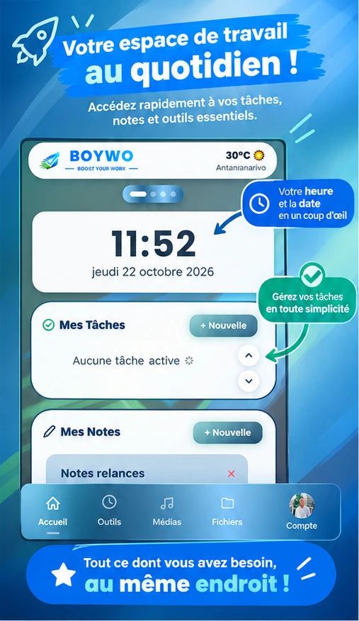
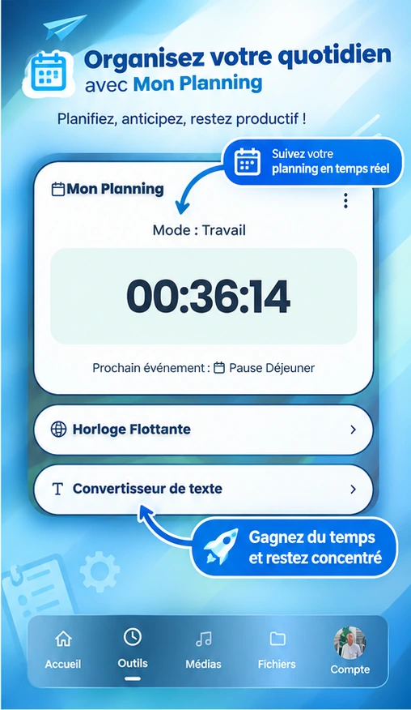
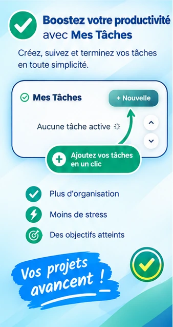
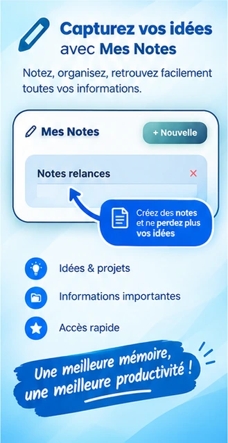
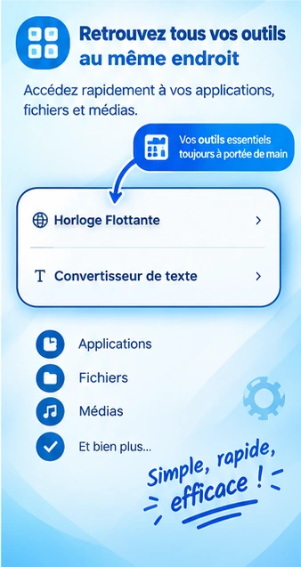

Boost Your Work, dans votre navigateur
BOYWO réunit vos tâches, vos notes, votre planning, votre musique et vos fichiers dans une seule extension Chrome, et les synchronise avec votre compte Google.

Tout ce que BOYWO fait, page par page
L’extension s’organise comme sa barre de navigation : Accueil, Outils, Médias, Fichiers et Compte.
Accueil
Votre journée d’un coup d’œil.
- TâchesTitre, description, rappel, épinglage, report d’une tâche en retard et statut.
- NotesNotes colorées avec pièce jointe, retrouvables dans la corbeille après suppression.
- PlanningDébut et fin de journée, pause déjeuner et petite pause, avec le compte à rebours de la phase en cours.
- Heure et météoHorloge, date et météo locale (température, humidité, vent, lever et coucher du soleil).
Outils
Les petits utilitaires du quotidien.
- Horloge flottanteUne horloge affichée par-dessus vos pages, avec choix du thème, de la police, du fuseau horaire et de la taille.
- Convertisseur de textePassez un texte en minuscules ou en majuscules, avec compteur de mots et bouton Copier.
- Smart Copy TrackerUn historique des textes copiés, avec recherche, détection des doublons et export en XLS, PDF ou TXT. L’enregistrement s’active et se coupe à tout moment.
- Image OptimizerSupprimez les métadonnées d’une image, redimensionnez-la, recadrez-la pour les réseaux sociaux et générez des icônes en 16, 32, 48 et 128 pixels.
Médias
Le lecteur audio BOYWO Player.
- PlaylistImportez des fichiers ou un dossier audio (MP3, OGG, WAV) par glisser-déposer.
- Égaliseur intégréBasses, médiums et aigus réglables, avec des préréglages comme Bass Boost ou Classique.
- Lecture en arrière-planLa musique continue quand vous fermez la fenêtre de l’extension.
- Favoris, vitesse et mini-lecteurMarquez vos pistes préférées, changez la vitesse de lecture et réduisez le lecteur.
Fichiers
Un explorateur pour tout ranger.
- Dossiers personnalisésClassez notes, tâches, images et pistes audio dans vos propres dossiers.
- Recherche et sélection multipleRetrouvez un élément dans tout l’espace, puis déplacez ou supprimez plusieurs éléments à la fois.
- Favoris et corbeilleRestaurez un élément supprimé ou supprimez-le définitivement.
- Import de fichiersAjoutez vos propres fichiers à l’explorateur.
Apparence et réglages
BOYWO prend vos couleurs.
- ThèmesCouleurs de fond, dégradés de 2 à 4 couleurs, et barre de navigation en style dégradé, plein, verre ou contour.
- TexteChoix de la police et de la taille du texte.
- Fond d’écranUn fond qui change chaque jour, ou une de vos images en fond personnalisé.
- Bulle flottante et ville par défautUne bulle BOYWO sur les pages visitées pour ouvrir l’application, et une ville de repli pour la météo si la localisation est refusée.
Compte
Votre espace sur tous vos appareils.
- Connexion GoogleConnectez-vous avec votre compte Google et choisissez un surnom et une photo.
- Synchronisation Google DriveLancez une synchronisation à la demande et consultez la date de la dernière.
- DéconnexionDéconnectez-vous de Google sans supprimer vos données.
Aperçu de l’extension
Faites défiler pour voir les écrans de BOYWO.




Installer BOYWO
BOYWO s’installe depuis le Chrome Web Store, puis s’ouvre depuis la barre d’outils de Chrome.
Vos notes, tâches et fichiers sont enregistrés dans votre navigateur, et la synchronisation passe par votre compte Google. Consultez la politique de confidentialité pour le détail des données et des services utilisés.